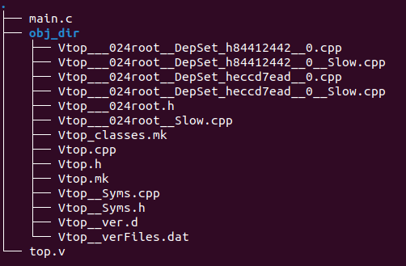

Verilator
本文最后更新于：2023年11月3日 晚上
- 参考
1. 简介
流程
运用 Verilator package，将 Verilog 和 System Verilog 编译转换为C++ / System C模型。
- 输出的模型会以.cpp/.h文件存在。
为了完成仿真，我们需要设计一个C++ Wrapper，这个Wrapper与传统的Verilog Testbench相类似，主要是为了连接顶层模块，并给予激励。
在C++编译器的工作下，前面生成的文件（包括转换后的C++/System C 以及 C++ Wrapper）以及库文件（Verilator提供的runtime library等）会被一同合并编译成一个可执行文件。
执行这个生成的可执行文件，就可以开始仿真。
2. 应用举例
2.1 基本应用
待测试模块代码如下
1
2
3
4
5
6
7module top(
input a,
input b,
output f
);
assign f = a ^ b;
endmodule（1）首先我们使用下面指令将代码编译成C++代码；运行之后得到了一个obj_dir文件夹。
1
verilator --cc top.v可以看到obj_dir文件夹中包含下图这些文件，其中 .mk 文件为用于make构建仿真的可执行程序，.h和.cpp文件包含了我们top.v源码实现的信息。

（2）编写测试模块代码如下
简单测试模块代码应包括以下内容。
SystemC 的仿真kernel会一直跟踪当前时间，可以通过调用 sc_time_stamp() 方法去访问。
使用下面代码例化一个对象用于新建仿真。
1
2Valu *dut = new Valu;
// 其相当于verilog中 top dut(端口例化...)使用下面代码设置产生vcd波形。
1
2
3
4Verilated::traceEverOn(true);
VerilatedVcdC *m_trace = new VerilatedVcdC;
dut->trace(m_trace, 5); // 其中5这个参数表示跟踪深度限制在dut的5级以内。（5级是子模块层级）
m_trace->open("waveform.vcd");下面代码中在while()循环中进行仿真。
- 其中 MAX_SIM_TIME 为 clk 翻转次数。
1
2
3
4
5
6while (sim_time < MAX_SIM_TIME) {
dut->clk ^= 1; //翻转clk
dut->eval(); //更新电路状态
m_trace->dump(sim_time); //将所有信号写入波形文件
sim_time++;
}最后，使用下面代码结束仿真。
1
2
3m_trace->close();
delete dut;
exit(EXIT_SUCCESS);
Verilator 是一个 two state simulator，因此它只支持逻辑值0和1，且对所有的信号初始化均为0.
但是我们可以通过命令改变此行为，可以让 Verilator 支持所有的信号为1或随机值。
- 这样不仅可以检查复位信号是否有效，还可以满足一些特殊电路情况的设计。
需要在实例化 dut 对象之前调用
Verilated::commandArgs(argc, argv);。另外，还需要添加编译选项
--x-assign unique和--x-initial unique。最后，还需要在执行时，更改为下面命令，将
+verilator+rand+reset+2传递给仿真的可执行文件，来让仿真运行时信号可初始化为随机值。1
./obj_dir/V$(MODULE) +verilator+rand+reset+2
（3）编译生成可执行文件
使用工具：GNU Compiler Collection（GCC）。
再次运行 Verilator ，包含 前面编写的测试模块代码和被测试模块代码，重新生成 .mk 文件
- 其中
-Wall选项为打开所有C++警告，也可以更换成-Wno-fatal，表示忽略所有非 fatal 的 warning。 --trace表明会追踪波形，如果需要导出vcd 或者 fst 等其他波形文件，需要加上这个选项。--exe生成可执行文件。--cc表明支持C++程序，不过也支持 C 程序。
1
verilator -Wall --trace --cc top.v --exe main.c- 其中
使用下面命令进行编译，生成可执行文件。
- 其中
-C是在读取makefile之前，先改变路径到指定文件夹下。 -f是读取 名为Vtop.mk 的Makefile文件。- 最后编译生成名为 Vtop 的可执行程序。
1
make -C obj_dir/ -f Vtop.mk Vtop- 其中
（4）运行仿真
- 直接调用
obj_dir/下生成的可执行文件。 - 运行之后会生成
*.vcd的波形文件；可以使用 gtkwave 等工具进行查看。
- 直接调用
2.2 拓展应用
2.2.1 编写 Makefile
将 2.1 节介绍的步骤编写成 Makefile 脚本如下。
1
2
3
4
5
6
7
8
9
10
11
12
13
14
15
16
17
18
19
20
21
22
23
24
25
26
27
28
29
30
31
32
33
34
35
36
37
38
39
40
41
42
43
44
45
46MODULE=top
.PHONY:sim
sim: waveform.vcd
.PHONY:verilate
verilate: .stamp.verilate
.PHONY:build
build: obj_dir/Valu
.PHONY:waves
waves: waveform.vcd
@echo
@echo "### WAVES ###"
gtkwave waveform.vcd
waveform.vcd: ./obj_dir/V$(MODULE)
@echo
@echo "### SIMULATING ###"
@./obj_dir/V$(MODULE)
# 如果需要将信号初始化为随机数，那么需要更改为下面指令。
# @./obj_dir/V$(MODULE) +verilator+rand+reset+2
./obj_dir/V$(MODULE): .stamp.verilate
@echo
@echo "### BUILDING SIM ###"
make -C obj_dir -f V$(MODULE).mk V$(MODULE)
.stamp.verilate: $(MODULE).sv tb_$(MODULE).cpp
@echo
@echo "### VERILATING ###"
verilator -Wall --trace -cc $(MODULE).sv --exe tb_$(MODULE).cpp
# 如果需要将信号初始化为随机数，那么需要更改为下面指令。
# verilator -Wall --trace --x-assign unique --x-initial unique -cc $(MODULE).sv --exe tb_$(MODULE).cpp
@touch .stamp.verilate
.PHONY:lint
lint: $(MODULE).sv
verilator --lint-only $(MODULE).sv
.PHONY: clean
clean:
rm -rf .stamp.*;
rm -rf ./obj_dir
rm -rf waveform.vcd
2.2.2 测试设置
复位信号设置
可以通过修改测试模块中
while()中的内容，添加复位信号相关设置，举例如下。1
2
3
4
5
6
7
8
9
10
11
12
13
14
15while (sim_time < MAX_SIM_TIME) {
dut->rst = 0;
if(sim_time >=3 && sim_time < 6){
dut->rst = 1;
dut->a_in = 0;
dut->b_in = 0;
dut->op_in = 0;
dut->in_valid = 0;
}
dut->clk ^= 1;
dut->eval();
m_trace->dump(sim_time);
sim_time++;
}
时钟上升沿计数
在
eval()和dump()之间添加判断语句，当clk=1发生时，就为计数器加1。- 实现代码如下，其中
posedge_cnt为上升沿计数变量，其数据类型与sim_time一致。
1
2
3
4
5
6
7
8
9while (sim_time < MAX_SIM_TIME) {
dut->clk ^= 1; //翻转clk
dut->eval(); //更新电路状态
if(dut->clk == 1){
posedge_cnt++; // Increment posedge counter if clk is 1
}
m_trace->dump(sim_time); //将所有信号写入波形文件
sim_time++;
}- 实现代码如下，其中
信号值随机化
2.1节（2）中有介绍通过设置、添加编译选项可以实现信号初始化值为随机数。除此之外，我们也可以为某个变量赋值为随机数。
首先，需要
includeC++ 的 header：cstdlib。1
#include <cstdlib>另外，需要使用
srand()函数为随机数生成器提供种子；它可以放在main()函数开头。随机数生成相关语法很容易可以在网上查到，这里就不详细介绍。
除了上面介绍的，也可以通过添加一些C++代码，实现对某个信号单周期或多周期的监控等。